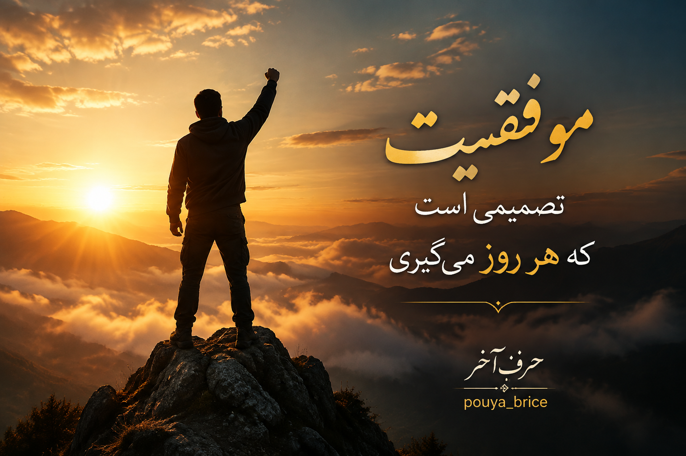

جملات انرژی بخش برای موفقیت و بهتر زندگی کردن

موفقیت یک تصمیم است؛ تصمیمی که هر روز با تلاش و امید ساخته میشود.
اگر امروز سخت تلاش کنی، فردا به چیزی میرسی که دیگران فقط آرزویش را دارند.
هیچ قلهای دور نیست، وقتی باور داشته باشی که میتوانی به آن برسی.
موفقیت از جایی شروع میشود که تصمیم بگیری دیگر تسلیم نشوی.
هیچ رویایی دور نیست، وقتی برای رسیدن به آن هر روز تلاش کنی.
آینده متعلق به کسانی است که امروز برای ساختنش قدم برمیدارند.
هر شکست یک درس است؛ فقط کسانی موفق میشوند که ادامه میدهند.
به خودت ایمان داشته باش، چون بزرگترین تغییرها از باور شروع میشوند.
موفقیت یک اتفاق نیست؛ نتیجه انتخابهای کوچک و تلاشهای روزانه است.
اگر امروز سختی میکشی، شاید در حال ساختن آیندهای باشی که آرزویش را داری.
هیچکس با ایستادن به مقصد نرسیده است؛ حرکت کن حتی با قدمهای کوچک.
قدرت واقعی زمانی پیدا میشود که بعد از هر زمین خوردن دوباره بلند شوی.
رویاها فقط با فکر کردن ساخته نمیشوند؛ با تلاش به واقعیت تبدیل میشوند.
امروز همان روزی است که میتوانی شروعی تازه برای زندگی خودت بسازی.
هیچ موفقیتی بدون صبر، تلاش و باور به خود به دست نمیآید.
هر صبح یک فرصت جدید است برای نزدیکتر شدن به هدفهایت.
افراد موفق کسانی نیستند که هرگز شکست نمیخورند؛ کسانی هستند که هرگز متوقف نمیشوند.
بزرگترین سرمایه تو، ذهنی است که میتواند غیرممکنها را ممکن کند.
موفقیت زمانی شروع میشود که به جای پیدا کردن بهانه، دنبال راه حل باشی.
هر قدم کوچکی که امروز برمیداری، تو را به رویای بزرگت نزدیکتر میکند.
خودت را با دیروزت مقایسه کن، نه با آدمهایی که مسیر متفاوتی دارند.
آدمهای بزرگ از روزهای سخت ساخته میشوند، نه از روزهای آسان.
وقتی باور داشته باشی میتوانی، نیمی از مسیر موفقیت را طی کردهای.
هیچ قلهای با آرزو فتح نمیشود؛ باید قدم برداشت و جنگید.
زندگی به کسانی لبخند میزند که برای بهتر شدن تلاش میکنند.
هر روز فرصتی است برای تبدیل شدن به نسخه بهتر خودت.
موفقیت حاصل صبر، استمرار و باور به مسیر است.
ترس از شروع، بزرگترین مانع رسیدن به موفقیت است.
اگر مسیر سخت است، یعنی داری به سمت یک هدف ارزشمند حرکت میکنی.
هیچ تلاشی بینتیجه نمیماند؛ شاید دیر، اما بالاخره ثمر میدهد.
موفقیت یعنی هر روز کمی بهتر از روز قبل باشی.
آینده زیبا را کسانی میسازند که امروز تسلیم نمیشوند.
قدرت تو بیشتر از چیزی است که در لحظههای سخت تصور میکنی.
گاهی بزرگترین پیروزیها بعد از سختترین روزها به دست میآیند.
هیچ محدودیتی وجود ندارد، جز آن چیزی که خودت در ذهنت ساختهای.
برای رسیدن به موفقیت باید بیشتر از دیروز تلاش کنی، نه اینکه بیشتر از دیگران باشی.
آدمی که هدف دارد، حتی از سختیها هم برای رشد خودش استفاده میکند.
رویاها زمانی واقعی میشوند که برایشان قدم برداری.
صبور باش؛ بهترین اتفاقها معمولاً بعد از بیشترین تلاشها اتفاق میافتند.
هر روز یک فرصت تازه است تا چیزی را بسازی که به آن افتخار کنی.
موفقیت یعنی ادامه دادن، حتی وقتی مسیر آسان نیست.
به تواناییهای خودت اعتماد کن؛ تو بیشتر از چیزی که فکر میکنی قوی هستی.
آرزوها بدون عمل فقط خیال هستند؛ حرکت کن تا به واقعیت تبدیل شوند.
هر شکست پایان راه نیست؛ گاهی شروع یک مسیر بهتر است.
افرادی که امروز موفق هستند، روزی فقط یک شروعکننده بودند.
هیچ موفقیتی ناگهانی نیست؛ پشت هر نتیجهای سالها تلاش وجود دارد.
به مسیرت ایمان داشته باش، حتی اگر دیگران هنوز آن را نمیبینند.
قویترین نسخه خودت را بساز؛ کسی که دیروز بودی، فقط شروع مسیر بود.